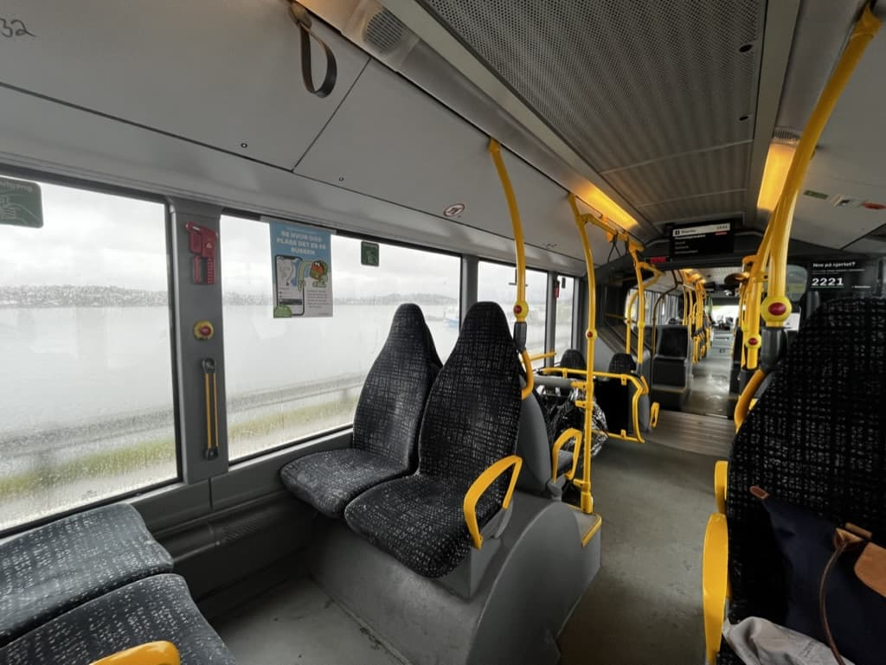
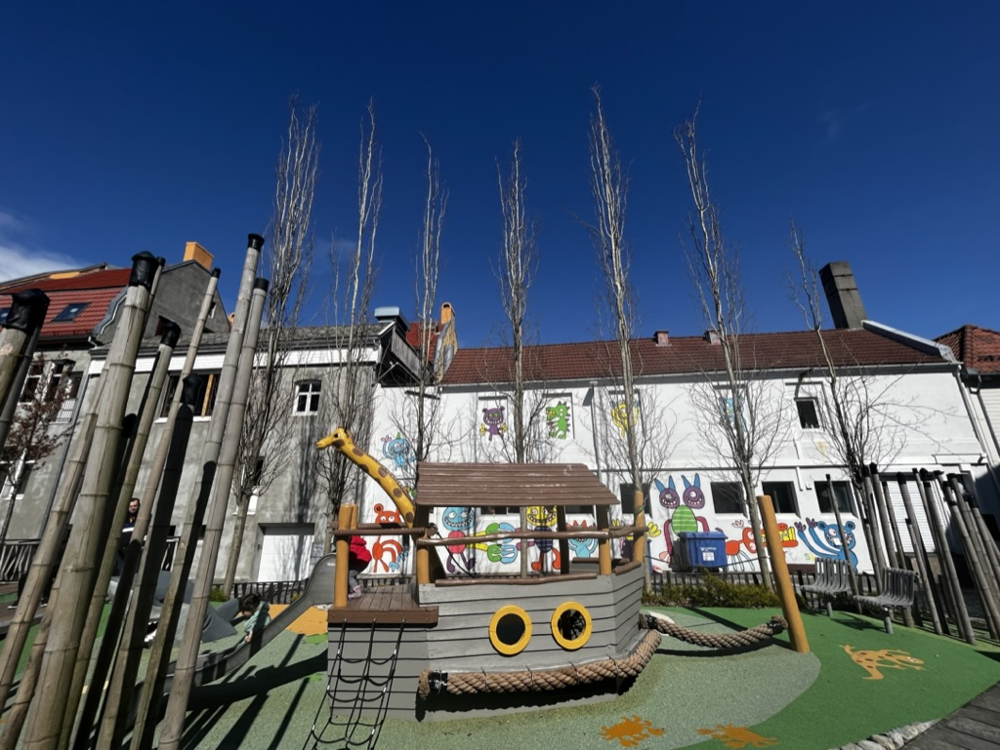
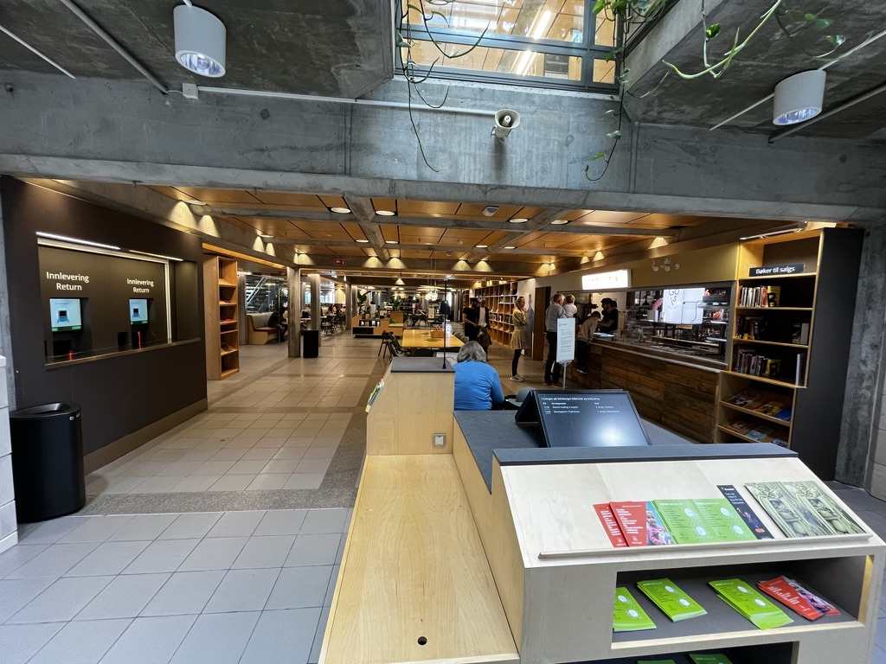
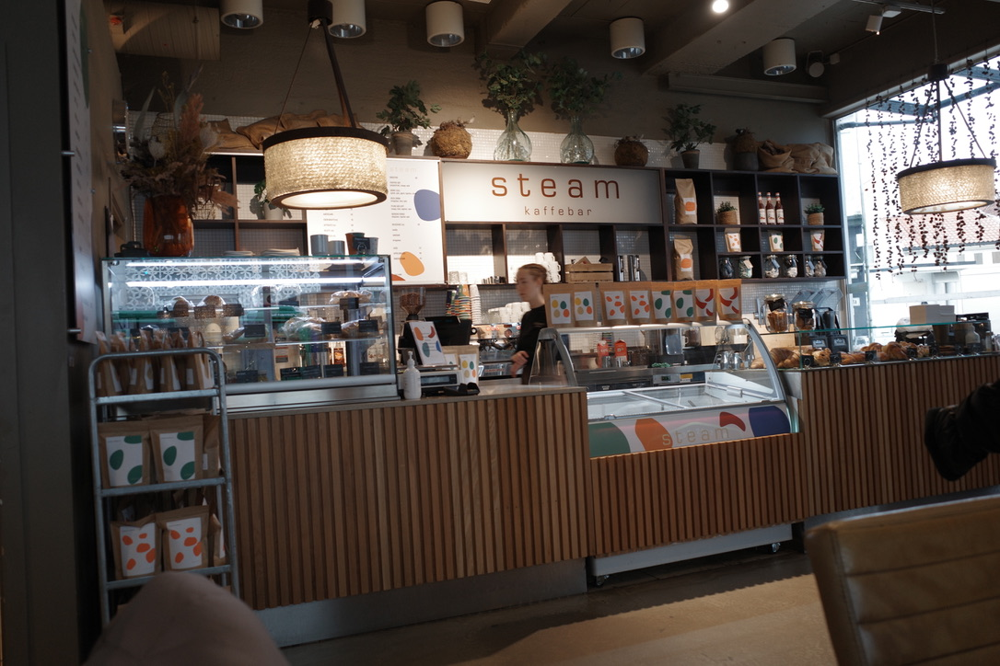
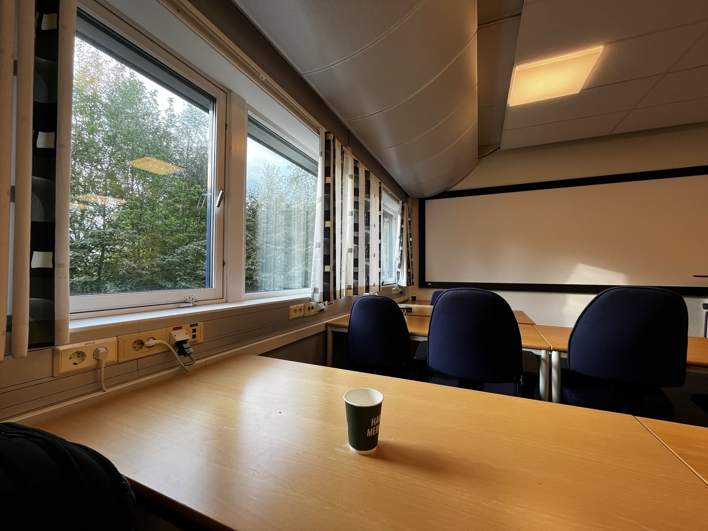
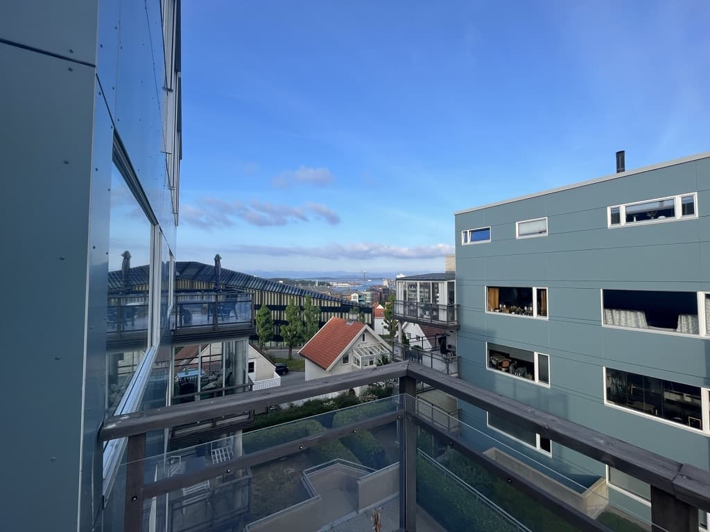
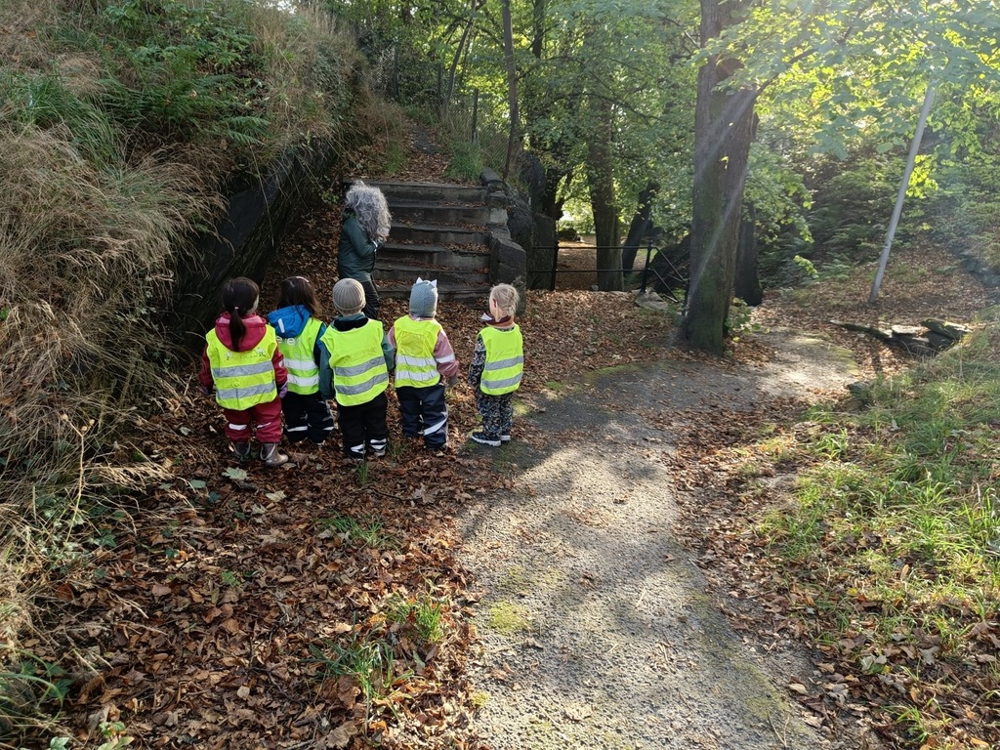
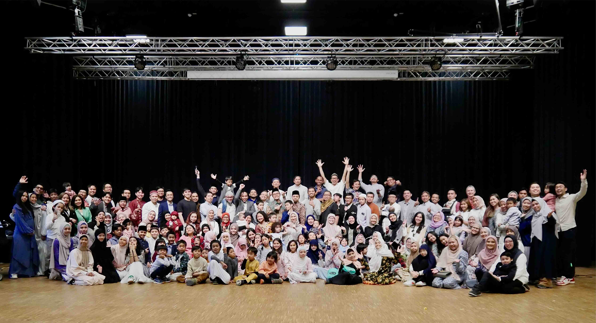
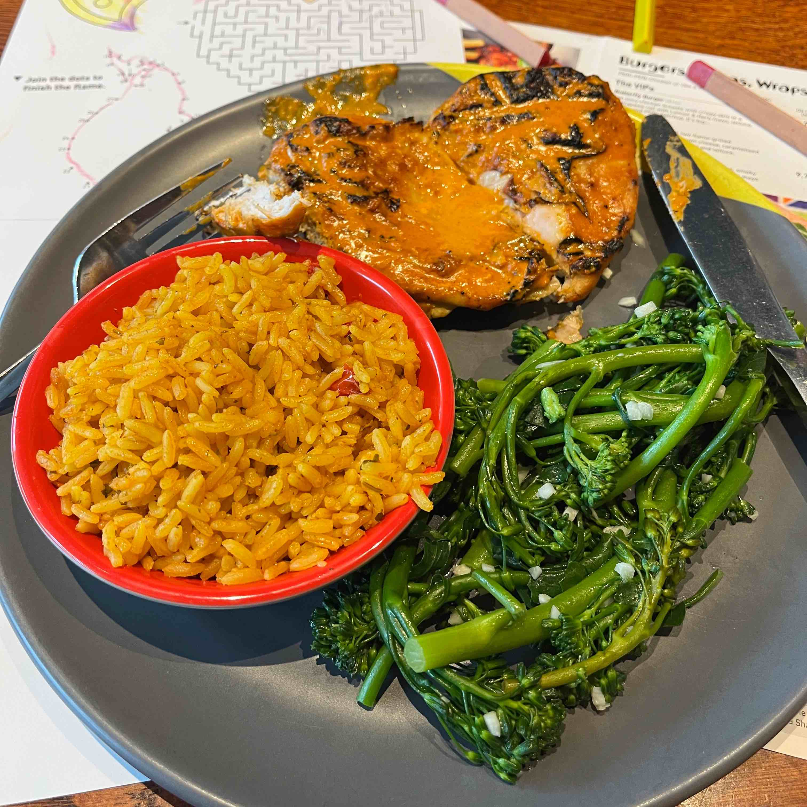

Stavanger, Takk for Meg!
On the 26th of June, 2022, we arrived in Stavanger, Norway. What seems to be a rather hardship at first, turns into a blessing time with me and family. We enjoyed the nature, the great public transportation, awesome library, tasty cafe (lots of them!), safe city, and playground for kids (lots of them too!) – bonus: I had the best office, and home so far.






I loved everything about this country, and my only regret is I have not spending enough time to explore the nature, and probably too soon to leave the country. I will forever cheered my short time here, our first snow, my daughter first time in nursery, so many great moments shared with this charming city of Stavanger. I am forever grateful.

Last but not least, the people - Indonesian in Stavanger.
I have no idea how lucky we are, surrounded by kind and caring people since day-1. Mas dan mbak-mbak Indonesia in Stavanger will always be our second family. Tusen Takk for Meg!

Hopefully, one day I can get back to this beautiful country! Amin Ya Rabb!
Aberdeen, Let’s Work It Out!
Arrived in 5th of May, we finally settle down in UK after a lengthy visa process. The good thing is, we were quite acustomed to Norway weather (cold and windy), and Aberdeen is no different. Although to me, the weather was not too bad (Norway still colder) but let’s not jinx it.
After arriving, one things is better here- they have Nandos!

Aberdeen has plenty of food selection actually, and far superior than in Norway as long as you were not looking for a fine dining restaurant with 3-michelin stars. Our favourite, like Nandos, similar taste with Nandos but with Halal lable like Maeme Peri, there is also Thai food, Pizza Express, KFC, and best of all – it is half the price when we went out in Stavanger!
We were feeling like de ja vu with KL, Malaysia. Decent mall, with shopping centre with more than just hiking outfit/gears LOL..
That is the good parts.
Stay tune for the not-so-good parts…
Citation
@online{wijaya2024,
author = {Wijaya, A.A.},
title = {A {Wee} {U-Turn} of {Life} to {Scotland,} {UK.}},
date = {2024-07-30},
url = {https://adtarie.net/posts/20240730-wee-u-turn-as-aberdonian/},
langid = {en}
}